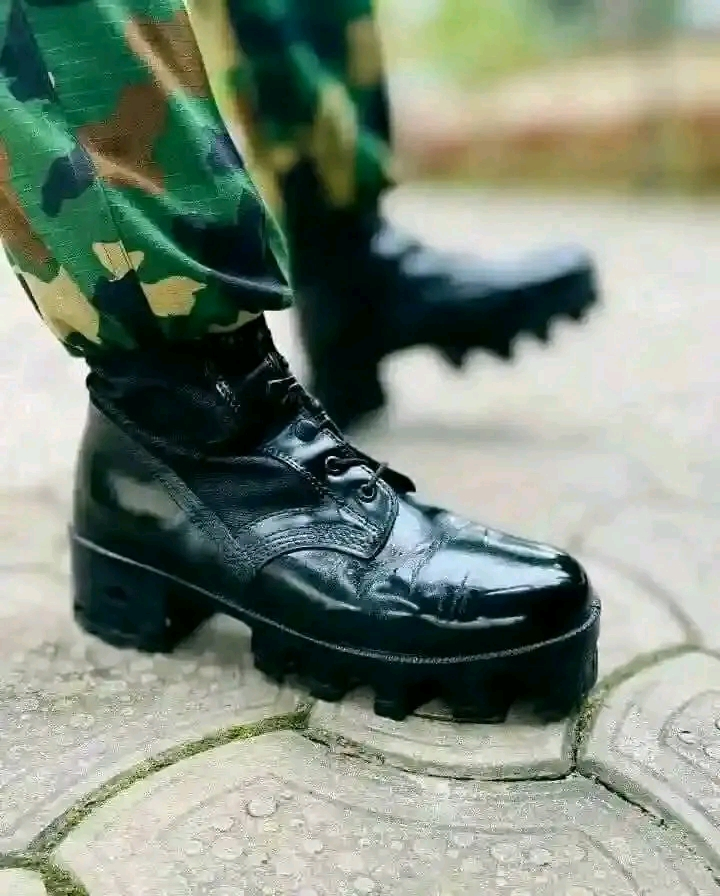

original video
Girl I don dey wait for you for a long time
Shey na till I don nearly 45
Many many things wey I get for mind
if I do you wrong I apologize
All the lies I stopped (stopped)
All the gbana and the shayo I stopped it (for you)
Mo de tin ba e so (so)
Even if na God e for don pick my call o
I don dey old o (oh no oh no)
Look into my eyes and pretend you don't no (oh no oh no)
Hmmm girl I'm catching cold o (oh no oh no)
My steeze and composure e don dey fold o (Oh no oh no)
Do me long throat omo
Dun bi tapioca o ta bi shombo
See as I dey follow up for love
Moda bi soldier and I've been on a run
Do me nice things omo
Dun bi tapioca o ta bi shombo
See as I dey follow up your love
Moda bi soldier and I've been on a run
Oloju ede
Straight legs like Denrele
Ati kekere
Annabella, I miss you bad
Sent you postcard and I give you checks
Ah o tutu gbeshe de
Shomo pe ina longbeshere
Jowo shamije kenkele
And girl I need you je ah
Hmmm don't do that
I don dey old o (old o oh no)
Look into my eyes and pretend you don't know
And if we don't last long
Woma pe wa lolodo (oh no oh no)
She say she like it when it's slomo (oh no morogo o)
Do me long throat omo
Dun bi tapioca o ta bi shombo
See as I dey open up for love
Moda bi soldier and I've been on a run
Do me nice things omo
Dun bi tapioca o ta bi shombo
See as I dey open up your love
Moda bi soldier and I've been on a run